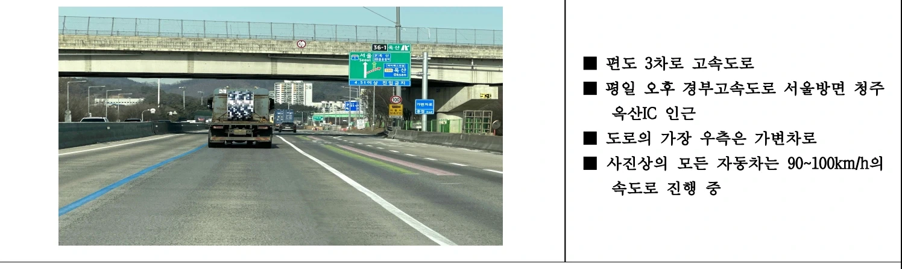

743. Hai cách lái xe nào là không đúng nhất trong tình huống sau?

- ①Làn đường dành cho xe buýt chỉ có xe buýt mới được lưu thông.
- ②Xe ô tô con được phép đi trên làn đường số 1 để vượt xe chở hàng phía trước.
- ③Giữ khoảng cách an toàn với xe chở hàng phía trước và cẩn thận với trường hợp có vật rơi xuống.
- ④Xe đang đi trên làn đường khả biến phải chuyển sang làn đường số 3.
- ⑤Xe chở hàng 5 tấn không thể tiến vào Oksan IC.
Xem đáp án
Đáp án
① Làn đường dành cho xe buýt chỉ có xe buýt mới được lưu thông.
② Xe ô tô con được phép đi trên làn đường số 1 để vượt xe chở hàng phía trước.
Căn cứ
Vào các ngày trong tuần, làn xe buýt trên Đường cao tốc Kyungbu chỉ hoạt động từ Osan IC đến đầu phía nam của cầu Hannam. Vào các ngày trong tuần, làn đường đầu tiên của Đường cao tốc Kyungbu ngoài đoạn này sẽ trở thành làn đường đầu tiên của đường cao tốc thay vì làn đường dành riêng cho xe buýt. Ô tô con muốn vượt và xe chở khách nhẹ, nhỏ gọn và cỡ trung muốn vượt có thể vượt ở làn đường đầu tiên của đường cao tốc (Quy tắc thi hành Luật Giao thông đường bộ [Phụ lục 9]). Cấm vượt trên cầu (Điều 22, khoản 3, số 3 Luật Giao thông đường bộ).
Phần căn cứ là bản dịch máy để tham khảo.